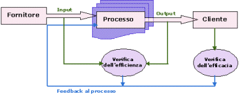

Il Business Process Analysis in aziende di
servizi
L'eccellenza competitiva nella gestione dei
processi aziendali critici richiede efficaci strumenti di analisi. Il BPA
(Business Process Analysis) assume un ruolo centrale nell’identificazione dell’esigenze dell’azienda, in
termini di attività da realizzare per soddisfare le richieste del mercato,
individuando e descrivendo tutti i processi necessari per la realizzazione
del proprio business.
di
Gianpaolo Castellano
Tutte le aziende che sviluppano il proprio business nel
settore dei servizi hanno come obiettivo la ricerca della qualità delle
prestazioni erogate, in quanto l’offerta di servizi di qualità è uno dei
principali fattori di successo. Anche per le imprese più tradizionali, più
orientate alla vendita di prodotti, l’attenzione alla qualità dei servizi
offerti a supporto è ormai divenuta un realtà consolidata, al punto che in
determinati mercati la competizione si gioca non tanto sul prodotto, quanto
sui servizi aggiuntivi venduti insieme ad esso.
Storicamente gli strumenti per realizzare un sistema
integrato di qualità sono stati pensati per i prodotti, ma è da tempo che si
sta assistendo ad un forte processo di rinnovamento e di riconversione di
tali strumenti in ottica servizio, con risultati di grande interesse.
Concetti tipo incarico, posizione, funzione, dipartimento, reparto, capo,
collaboratore e molti altri del genere, sono oggi sostituiti con termini
quali processi critici, processi di supporto, descrizione di processo,
proprietario del processo, output di processo, input di processo,
efficienza/efficacia del processo, gruppo, allenatore ed altri.
L'assunzione della centralità dei processi, spesso denominata visione per
processi o approccio per processi, ha portato ad un ripensamento
complessivo dell’organizzazione aziendale nel settore dei servizi,
innescando di fatto:
-
uno snellimento dell'organizzazione con la creazione di
gruppi di lavoro interfunzionali, responsabilizzati su obiettivi comuni e
capaci di gestire direttamente tutte le leve che determinano le
prestazioni;
-
una modifica delle professionalità richieste, superando la
frammentazione di compiti e di competenze;
-
una modalità di gestione tesa al miglioramento continuo,
basata sull'osservazione dei risultati e sulla partecipazione in team
di tutti gli attori interessati.
In questa nuova ottica, il Business Process Analysis (BPA)
assume un ruolo centrale nell’identificazione dell’esigenze dell’azienda, in
termini di attività da realizzare per soddisfare le richieste del mercato,
individuando e descrivendo tutti i processi necessari per la realizzazione
del proprio business.
Per definizione, un processo è un insieme di attività
tra loro correlate finalizzate alla realizzazione di un risultato definito e
misurabile, che trasferisce valore al fruitore del servizio. In un processo
è sempre possibile individuare degli elementi tipici che ne descrivono le
caratteristiche:

-
Fornitore: a monte del processo che fornisce gli
input.
-
Cliente: a valle del processo che fruisce degli
output.
-
Input: forniti dal fornitore o intrinseci nel processo
stesso.
-
Output : servizio o prodotto a valore aggiunto per il
cliente.
-
Efficienza: parametro di processo, indice della
produttività di processo.
-
Efficacia: parametro di processo, indice della qualità
di processo.
Uno dei principali obiettivi del BPA è, una volta
individuati tutti i processi concorrenti alla realizzazione del business
aziendale, riconoscere quali sono fondamentali e quali di sostegno secondo
la seguente classificazione:
Processi Centrali: sono i processi principali che
realizzano le attività/servizi di core business dell’azienda, in altre
parole i processi che fanno soldi. Questo tipo di processo generalmente é
articolato in più processi primari, tutti indirizzati al soddisfacimento
delle esigenze del cliente.
Processi Critici: chiamati anche processi primari,
questi processi sono di maggiore importanza e sono quelli che hanno
conseguenze dirette sul cliente. Tipicamente i processi critici sono di
appoggio o fanno parte dei processi centrali. Si evidenzia che i processi
primari, quando suddivisibili, possono essere ottenuti dall’insieme di
sub-processi tutti, per definizione, critici.
Processi di Supporto: chiamati anche processi
secondari, questi processi sono spesso invisibili al cliente, ma
essenziali per il funzionamento operativo dell'azienda. Anche per i
processi secondari e possibile una suddivisione in sub-processi.
La fase successiva del BPA, a valle della classificazione in
processi centrali, principali e di supporto, è una definizione puntuale di
ciascun processo applicando i concetti del Process Engineering (PE).
La strategia di partenza del PE è di considerare ciascun
processo o sub-processo in funzione delle esigenze dei relativi clienti, di
conseguenza i processi assumono un significato strategico per l'impresa.
Per ogni processo si individuano i criteri idonei per la
valutazione della performance mediante la definizione e misurazione
di parametri di efficienza e di efficacia degli stessi.
L'obiettivo del PE è la definizione di Processi Snelli, cioè processi
ottimi senza sprechi. In tal senso la metodologia adottata può essere
schematicamente sintetizzata come segue:
-
eliminazione di tutte le attività non necessarie (non a
valore aggiunto);
-
razionalizzazione ed ottimizzazione di tutte le attività
significative restanti (a valore aggiunto);
-
determinazione della sequenza logica delle attività a
valore aggiunto necessaria alla realizzazione del processo, evitando
soluzioni di continuità spazio-temporali (l'esecuzione delle varie
attività deve fluire ad un passo ben definito e regolare);
-
individuazione del Proprietario del Processo o
Responsabile del Processo, cioè della persona fisica, univocamente
identificata, responsabile dell'intero processo, del suo output e della
sua performance complessiva;
-
individuazione degli Operatori di Processo,
individui e/o gruppi, capaci di eseguire un determinato numero di attività
componenti il processo stesso, conformemente agli standard di qualità
attesi;
-
caratterizzazione puntuale di tutti gli input/output e dei
relativi parametri qualitativi per consentire un attento monitoraggio
delle performance;
-
pianificazione temporale e stima dei costi al fine di
misurare l'efficienza del processo;
-
analisi dei feed-back cliente per la valutazione
dell'efficacia del processo;
-
rilevazione tempestiva di tutte le situazioni di non
conformità, cioè di deviazione del reale dall'ideale, ed
individuazione delle azioni correttive eventualmente da intraprendere;
Un processo snello deve quindi avere caratteristiche di
semplicità, di compattezza, di economicità e di facilità d’uso. L'attenzione
deve sempre essere maggiormente rivolta all’efficacia piuttosto che
all'efficienza, che dovrebbe essere appena sufficiente per riuscire a
generare l'output richiesto al processo.
Un processo snello deve essere strutturato sulla base dei
bisogni e delle aspettative del cliente, e deve essere sufficientemente
flessibile per adattarsi a sue eventuali eccezioni/richieste di
personalizzazione.
Un processo snello deve richiedere pochissima supervisione
permettendo al management di focalizzare le proprie attenzioni non più verso
attività di supervisone/controllo, ma piuttosto verso quelle di supporto e
formazione più conformi ad una figura di allenatore piuttosto che di capo.
Infine particolare attenzione deve essere dedicata alla fase
conclusiva del BPA, che consiste nella rappresentazione dei processi
analizzati. Una completa e chiara rappresentazione dei processi permette
un’immediata comprensione delle dinamiche adottate e garantisce la facilità
di gestione del processo stesso. E' importante quindi disporre di modelli
per la descrizione dei processi in grado di evidenziarne tutti gli aspetti a
diversi livelli di dettaglio.
Esistono ovviamente molte tecniche di modellazione dei
processi, tra le principali si evidenziano:
Nella scelta del modello si dovrà porre particolare
attenzione alle sue caratteristiche in modo da adottare quello più adatto ad
enfatizzare gli aspetti che maggiormente influiscono sugli obiettivi
ipotizzati.
E’ importante concludere evidenziando che una fase di
analisi ben condotta è una garanzia di successo per la gestione ed
ottimizzazione futura dei processi.
© 2005 - Eccellere - Business
Community
|